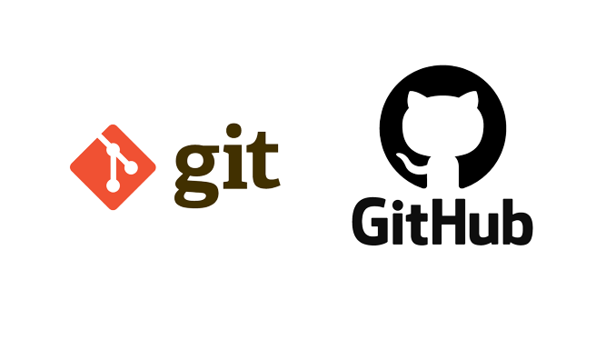

A Visual Studio Code
A Visual Studio Code (rövidítve: VSCode vagy VS Code) ingyenes, nyílt forráskódú kódszerkesztő, melyet a Microsoft fejleszt Windows, Linux, és macOS operációs rendszerekhez.
Támogatja a hibakeresőket, valamint beépített Git támogatással rendelkezik, továbbá képes az intelligens kódkiegészítésre az IntelliSense segítségével.
A VSCode-ban a felhasználók megváltoztathatják a kinézetet (témát), a szerkesztő gyorsbillentyű-kiosztását, az alapértelmezett beállításokat és még sok egyebet.
Támogatja a kiegészítőket, melyek segítségével további funkciók, testreszabási lehetőségek, letölthető színsémák érhetők el.
A VSCode az Electron nevű keretrendszeren alapszik, amellyel asztali környezetben futtatható Node.js alkalmazások fejleszthetőek. A Visual Studio Code a Visual Studio Online szerkesztőn alapszik (fejlesztési neve: "Monaco").


A programot 2015. április 29-én -én jelentették be a Build 2015 konferencián (a Microsoft éves fejlesztői konferenciája), november 18 -án pedig MIT licence alatt nyilvánossá tették a forráskódját.
MIT licence: Egy megengedő típusú licence, amit az MIT egyetemen alakítottak ki. A licence megengedő volta abba nyilvánul meg, hogy nem köti le a fejlesztő és a felhasználó kezét sem. Az ilyen licenccel nagyon tág teret enged a felhasználók és a programozók számára is.